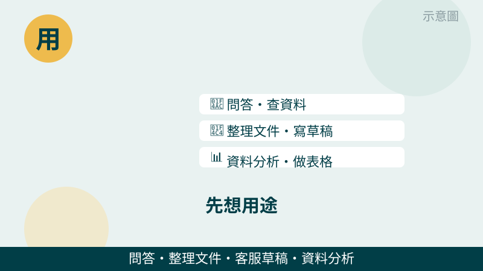
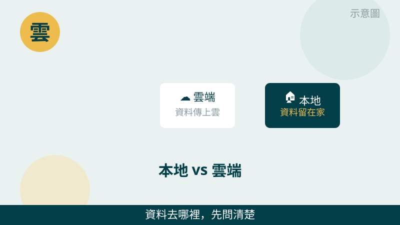
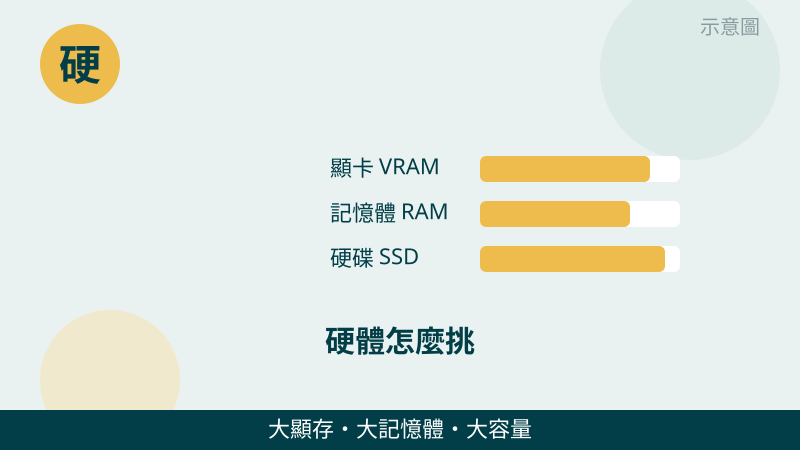
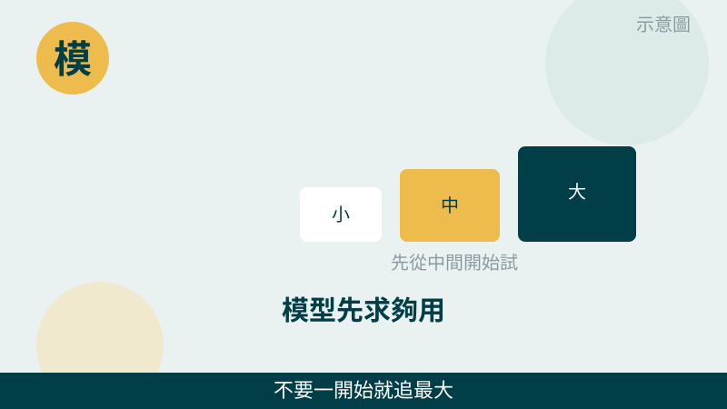

本地 AI 主機沒有一種配法適合所有人。先看您想讓 AI 幫您做什麼，再決定配多強。只是問答查資料，和要整理大量文件、分析資料，需要的效能差很多；先把用途列出來，配菜單才不會配太強浪費錢，也不會配太弱跑不動。
開始之前先跟您說明：組新機報價透明，正式報價會列出每一個零件的品牌、型號和價格，讓您自己比價；傳 LINE 聯繫我們，詳談需求後再報價給您確認。文章裡不寫零件型號的行情價，因為行情會變動，正式報價才會列出每個零件的實際價格；這裡只跟您談方向。本地 AI 主機 $50,000 起，是參考價，實際依顯卡與記憶體規格而定；可開立統一發票。
用途先傳給我們看
把想讓 AI 幫您做的事、平常處理的資料量傳 LINE 給我們，我們會先幫您看方向對不對，再報一個總價給您確認。先免費評估，確認後再決定要不要組。
本地 AI 主機怎麼挑 6 步：先看用途再決定
- 1. 先想用途：想讓 AI 幫您做什麼，比想配多強更重要。請先列出想讓 AI 做的事：問答查資料、整理文件、寫客服回覆草稿、還是分析資料。怎麼判斷：用途越清楚，配法就越準；如果只說「想要一台 AI 電腦」，我們很難知道該配到什麼程度。把用途寫下來，再來談預算會順很多。

示意圖（非官方截圖） - 2. 本地 AI 跟雲端 AI 差在哪：資料去哪裡，先問清楚。雲端 AI 是把資料傳到別人的伺服器上跑，方便但資料離開了您的電腦；本地 AI 是模型裝在您自己的電腦裡跑，文件與對話留在本機，不上傳雲端。怎麼判斷：如果處理的是客戶資料、合約、帳務這些不想外流的東西，本地跑會比較安心；如果只是隨便問問一般問題，雲端也可以。先分清資料的敏感程度，再決定要不要本地跑。

示意圖（非官方截圖） - 3. 硬體怎麼挑：大 VRAM 顯卡、大記憶體、大容量 SSD。本地 AI 吃的不是遊戲畫面，而是顯卡的記憶體（VRAM）和電腦的記憶體。怎麼判斷：顯卡 VRAM 建議 12GB 以上、記憶體建議 32GB 以上，64GB 可以跑全部量化；VRAM 越大，模型跑起來越快、能跑的模型也越大；硬碟要留夠大的空間放模型檔案，建議用大容量 SSD，讀取才不會等太久。我們會依您的用途，幫您抓這個方向。

示意圖（非官方截圖） - 4. 模型先求夠用：不要一開始就追最大。模型有大有小，大的比較聰明，但跑起來比較慢、對硬體要求也比較高。怎麼判斷：先從夠用的大小開始，實際用一陣子，覺得不夠再往上加；一開始就追最大的模型，電腦配得貴，日常用起來也不一定比較順。我們會先幫您看用途，再建議從哪個大小開始。

示意圖（非官方截圖） - 5. 資料安全：資料留在自己電腦，對外發送前先人工確認。本地跑最大的好處就是資料不離開您的電腦，但這不代表什麼都不用管。怎麼判斷：AI 寫出來的回覆、整理好的文件，真的要對外發送之前，請您自己先看過一次再發；客戶資料、合約這些檔案，也請放在只有您能碰到的地方。我們交機時會教您基本的使用方式，養成先確認再發送的習慣。
示意圖（非官方截圖） - 6. 預約到府安裝＋交機驗收：現場開機試，教您基本使用。組好之後，我們會預約到府安裝，現場開機測試，確認 AI 跑得起來、您要用的功能都沒問題，再教您基本使用方式，有疑問當場問最清楚。怎麼判斷：現場實際用用看，確認問答、整理文件都順了再交機；如果交機時發現哪裡不對，請當場跟我們說，我們會先幫您確認再交機。
示意圖（非官方截圖）
出現這些情況，就別再自己試了
- 不確定顯卡 VRAM 夠不夠、記憶體要配多大——請先拍照或傳訊息問我們，不要憑感覺亂買亂裝，規格不合裝不上去事小，硬裝可能傷到零件
- 想自己裝模型但不知道怎麼裝、跑起來一直出錯——請先拍照問我們，不要硬裝硬試，模型裝錯或設定錯，跑出來的東西不準反而更麻煩
- 自備零件想請我們組裝——請先提供型號給我們確認相容，零件本身不保固，確認合得來再安排組裝
- 用途還沒想好、想讓 AI 做什麼也還沒想清楚——請先把用途和期待想一想再來問，方向清楚了，報價才會準
本地 AI 主機配多強沒有標準答案，要看您想讓 AI 做什麼、資料量多少、預算多少。把用途和預算傳 LINE 給我們，我們會報一個總價給您確認，您確認後再決定要不要組。營業時段平日 20:00–24:00、假日 06:00–24:00，全預約制，請先約好時間再過來。
想直接組一台本地 AI 主機？先看組新機專頁
用途、預算、參考總價一次看清楚，再傳 LINE 給我們報一個總價確認。
常見問題
本地 AI 主機跟一般電腦差在哪？
差在用途跟配法：本地 AI 主機是為了在本機跑 AI 模型而配的，重點是顯卡 VRAM 要夠大、記憶體要夠大、硬碟空間要夠放模型；一般文書機不需要這些。我們會先問您的用途，再決定配多強，不會配過頭浪費錢。
資料真的不會上傳嗎？
本地跑的時候，模型在您自己的電腦裡運作，文件與對話留在本機，不上傳雲端。不過要提醒您：AI 寫出來的東西真的要對外發送之前，請您自己先看過一次再發，養成先確認再發送的習慣。
本地 AI 主機大概要多少錢？
本地 AI 主機 $50,000 起，是參考價，實際依顯卡與記憶體規格而定；傳 LINE 聯繫我們，詳談需求後再報價，正式報價會列出每一個零件的品牌、型號和價格，讓您自己比價，確認後再決定要不要組。可開立統一發票。
舊電腦能不能改裝成 AI 主機？
要看舊電腦的顯卡 VRAM 與記憶體夠不夠：顯卡 VRAM 建議 12GB 以上、記憶體建議 32GB 以上。把舊電腦的型號拍照傳 LINE 給我們，我們先免費幫您評估，看是升級划算還是直接組一台新的划算。
不會用 AI，要怎麼開始？
不用擔心。交機時我們會現場教您基本使用方式，從怎麼問問題、怎麼整理文件開始，先從一個用途練起，用順了再慢慢加。真的需要協助，可以傳 LINE 聯繫我們，我們會陪您看。
相關文章：本地 AI 主機方案・組新機專頁、台中組電腦推薦・先說用途再配菜單、組裝電腦多少錢・三種預算這樣抓、自救百科總覽